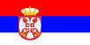

Заставе света
- 

Србија
Народна застава је тробојка хоризонтално поређаних поља истих висина црвене, плаве и беле боје. Државна застава је тробојка хоризонтално поређаних поља истих висина црвене, плаве и беле боје, а преко свега, центра помереног ка јарболу за једну седмину укупне дужине заставе Мали грб Србије. Последња верзија заставе је из 11. новембра 2010. године.
Русија
Застава Русије (рус. Флаг России), или службено Државна застава Руске Федерације (рус. Госуда́рственный флаг Росси́йской Федера́ции), један је од националних симбола Русије, поред грба и химне. То је тробојна застава која се састоји од три једна хоризонтална поља: горњег бијелог, средњег плавог и доњег црвеног. Однос ширине заставе наспрам њене дужине је 2:3.
Шпанија
Застава Шпаније симболизује шпанску нацију. Она је симбол њеног суверенитета, независности, јединствености и целовитости и представља највише вредности изражене у уставу Шпаније. Коначни, данашњи изглед шпанска застава је добила 1981. године, када је донесен Закон о грбу (5. октобра 1981.) којим је коначно дефинисан изглед националног грба.
Италија
Застава Италије (позната у Италији и као Il Tricolore - тробојка) је тробојна застава са три једнака вертикална поља (гледајући од јарбола) зелене, беле и црвене боје. У званичној је употреби од настанка Италијанске републике 1946. године.
Застава је инспирисана заставом Француске, али нема званичног тумачења употребљених боја. Незванична тумачења су да зелена боја представља шуме и пашњаке Италије, бела снежне Алпе а црвена крв проливену у борби за ослобођење и уједињење. Религиозније тумачење ове три боје представља као наду, веру и доброчинство.